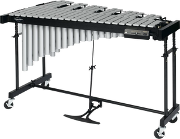

Cargando
Liceo
30
Toggle navigation
Idiofonos de Placa
Trabajo de Musica
Profesor: Carlos Sosa
Alumno: Gonzalo De Leon
Grupo: 2°6
Marimba
¿Que es la Marimba?
La marimba es un instrumento de percusión idiófono, de forma parecida al xilófono. Posee una serie de láminas de madera de distintos tamaños, dispuestas de mayor a menor, que se golpean con mazas para producir notas musicales. Cada tecla tiene su propia caja de resonancia y el conjunto está fijo en un armazón con patas.
Video
Vibráfono

¿Que es el Vibráfono?
El vibráfono, también llamado vibraphone en inglés o simplemente vibes, es un instrumento musical de la familia de los idiófonos. Es un laminófono similar al xilófono, pero las láminas son de aluminio. Estas láminas son percutidas con baquetas o mazos con cabeza de hilo, lana o nylon. El ejecutante dispone de mazas de diferentes tamaños y materiales que le permiten obtener diferentes sonidos. Por ejemplo, los tonos más dulces se obtienen usando mazas delgadas de cabeza blanda.
Video
Xilófono
¿Que es el Xilófono?
El xilófono es un instrumento musical de percusión. Cada lámina se afina según un tono específico (nota musical) de la escala cromática. Como se puede afinar, se trata de un laminófono de sonido determinado. El orden de las láminas es similar al orden del teclado de piano.
Video